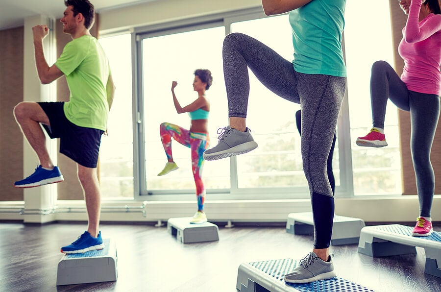
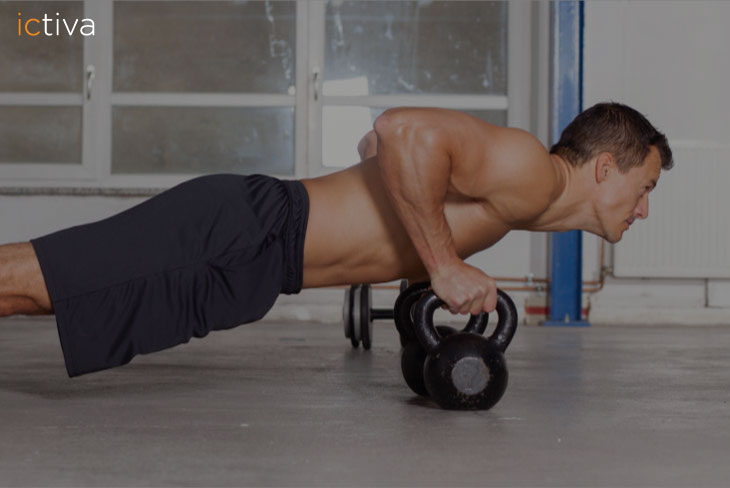
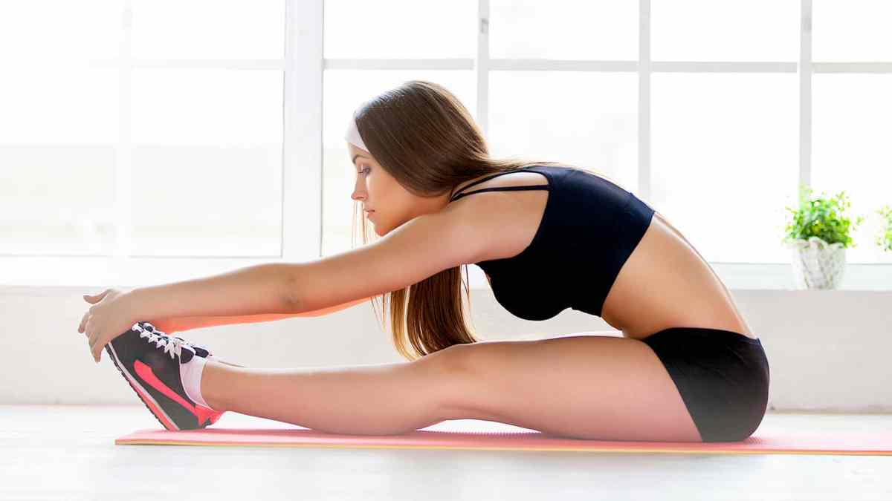

¿Por qué es importante hacer ejercicio?
Ventajas y efectos beneficiosos del ejercicio físico
Los expertos recomiendan que los adolescentes hagan 60 minutos o más de actividad física de moderada a vigorosa cada día. He aquí algunas de las razones:
- El ejercicio físico es bueno para todas las partes del cuerpo, incluida la mente. El ejercicio físico hace que el cuerpo genere sustancias químicas que pueden ayudar a una persona a sentirse bien. El ejercicio físico puede ayudar a las personas a dormir mejor. También puede ayudar a algunas personas que padecen una depresión leve o que tienen baja autoestima. Además, el ejercicio puede dar a la gente una verdadera sensación de logro y orgullo por alcanzar determinadas metas, como batir un récord personal en 100 metros llanos.
- El ejercicio físico ayuda a la gente a perder peso y reduce el riesgo de desarrollar algunas enfermedades. El ejercicio físico regular reduce los riesgos de ciertas enfermedades, como obesidad, diabetes tipo 2 e hipertensión. El ejercicio físico puede ayudar a mantener el cuerpo en un peso saludable.
- El ejercicio ayuda a envejecer bien. Quizás no te parezca importante ahora, pero tu cuerpo te lo agradecerá más adelante. Por ejemplo, la osteoporosis (un afinamiento de los huesos) puede convertirse en un problema a medida que la gente envejece. El ejercicio físico que te obliga a sostener el peso de tu propio cuerpo (como saltar, correr o caminar) puede ayudar a fortalecer los huesos.
Las tres partes de una rutina equilibrada de ejercicio físico son las siguientes: los ejercicios aeróbicos, los ejercicios de fuerza y los ejercicios de flexibilidad.
|  |  |  |
|---|
Hacer deporte, una decisión de vida más que recomendable
Luego de repasar todos estos datos, no hay duda de que la actividad física tiene mucho para aportar en la vida de todas las personas. Sin importar la edad ni la condición física todos pueden adaptar su disciplina favorita a sus posibilidades.
Además, si se elige una disciplina que divierta y motive, no veremos al ejercicio como una obligación, sino como una actividad para disfrutar realmente. ¡Y más todavía si lo hacemos con amigos o con la pareja!.